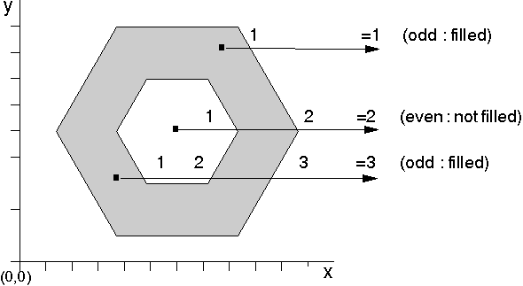

Alternate Mode
In alternate mode, the following occurs:
- A point is included in the filled area if you have
to cross an odd number of lines in the area when drawing a line from that
point to infinity.
- A point is not included in the filled area if you
have to cross an even number of lines in the area when drawing a line from
that point to infinity.
In the example in the following figure, the inner hexagon is not shaded,
because to draw a line from any point in the hexagon to infinity, you must
cross two boundary lines. The remainder of the area is shaded, because to
move outside the area, you need to cross only one boundary line.

Calculating Filled Areas Constructed in Alternate Mode
[Back: Area Construction]
[Next: Winding Mode]